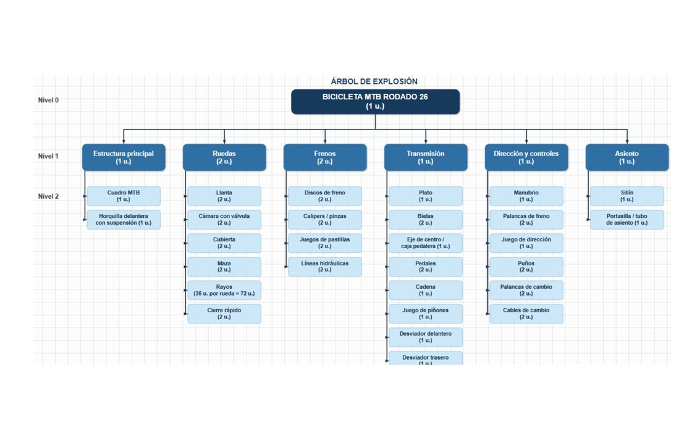

PRODUCTION PLANNING · UNCUYO · 2025
Material Requirements Planning - Bicycle Production
BOM design, lead-time and inventory modeling, planned purchasing and manufacturing orders using POM-QM.
MRPBOMPOM-QMSupply Chain

PROJECT OVERVIEW
Planning production and purchasing
BOM design, lead-time and inventory modeling, planned purchasing and manufacturing orders using POM-QM.
Context: team project, Operations Planning & Control, UNCUYO, 2025. Report written in Spanish.